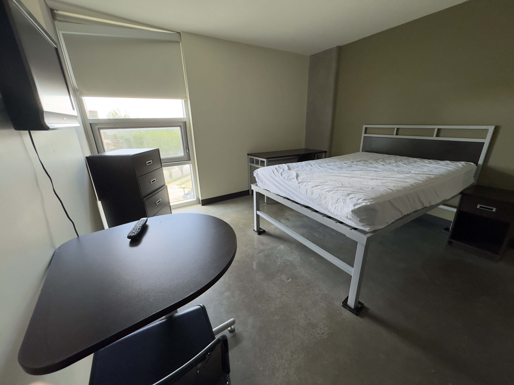
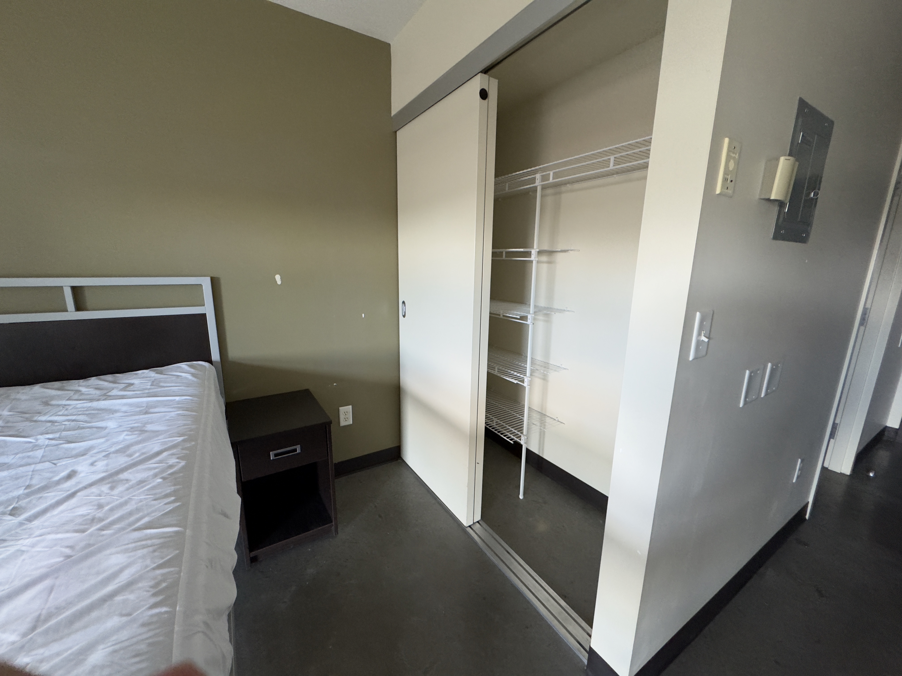
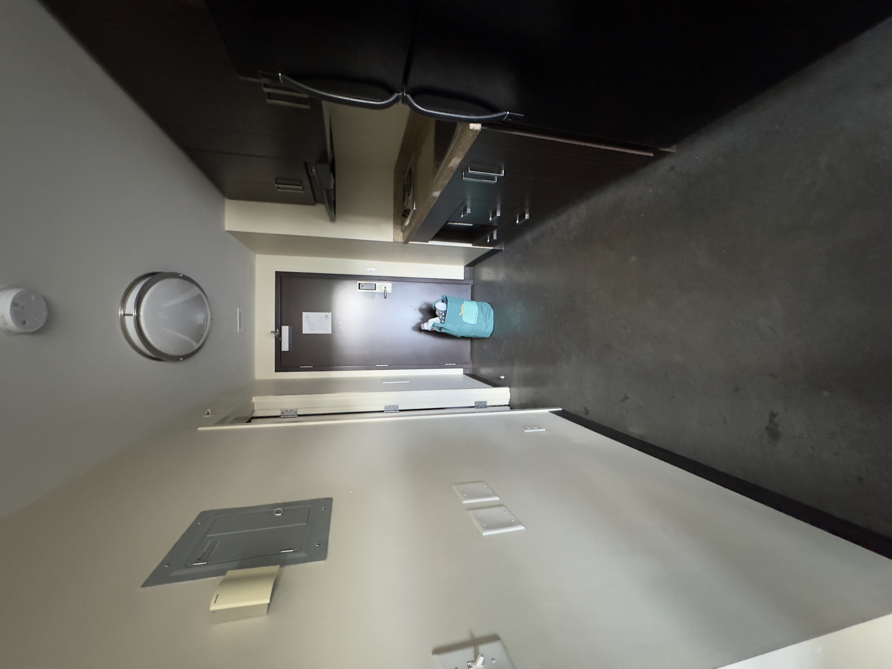
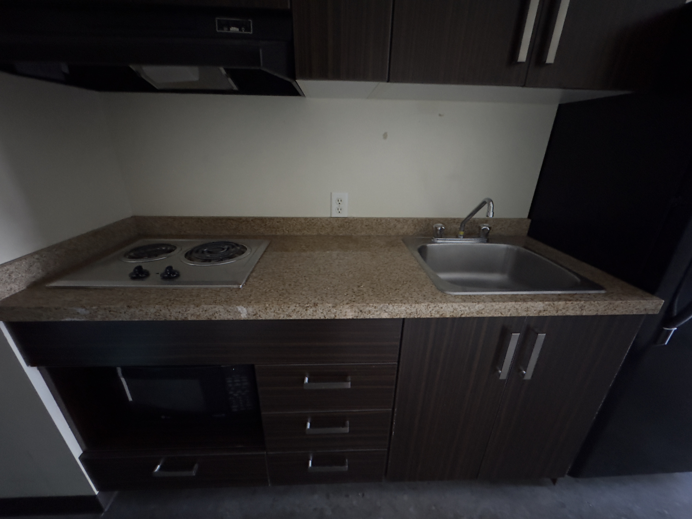
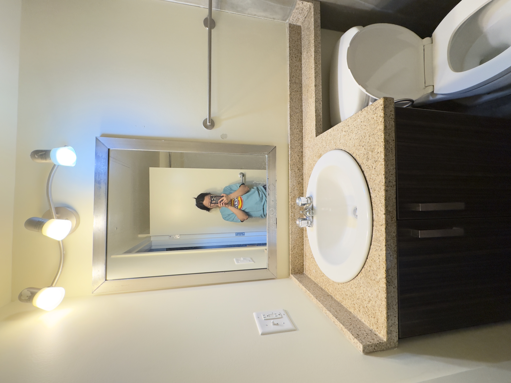
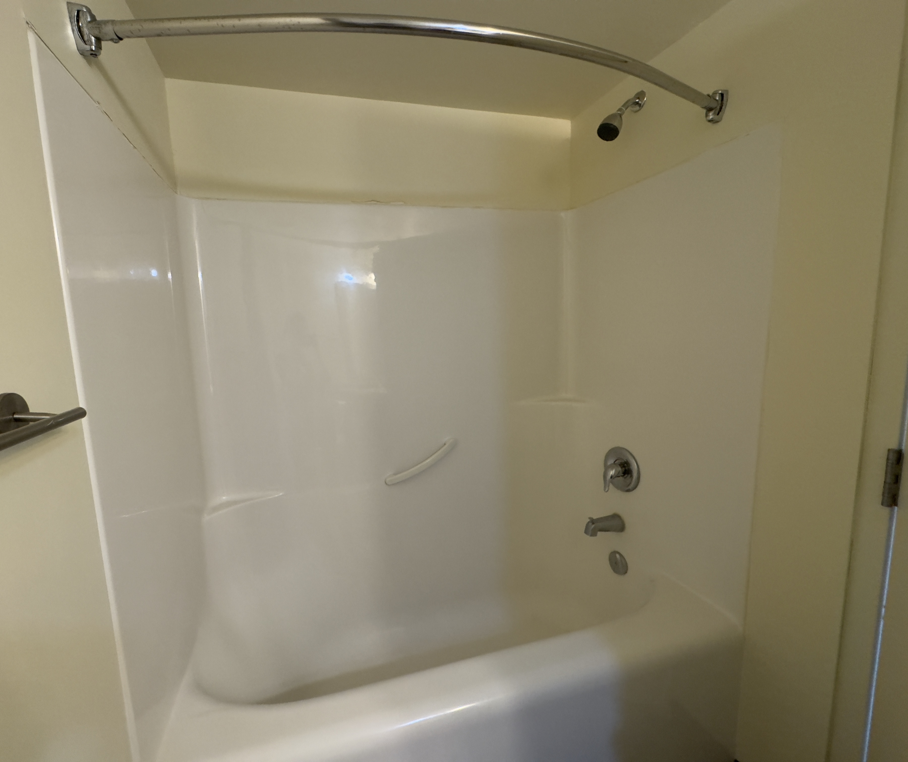

Moving in the Building






The summer passed by so quick, to the point that, when I put my before and after moving pics side by side, I find it's funny that I couldn't really tell the difference hahah. This time, when moving inside the same dorm building, I wouldn't say I feel rushed like last time, but I do notice that there are still boxes or bags of items that were brought from last time to here, but not yet organized. This is something that happened to me quite a lot when the moves became very often, thinking about my moving experiences in middle school (though between the moves, time did not necessarily feel short, but I could be so worried and pay more attention to my belongings once I knew I had to move).
...and yeah, like what I expected in the previous post, I did not use the bathtub at all 😅 I just knew my laziness and slothfulness way too well...